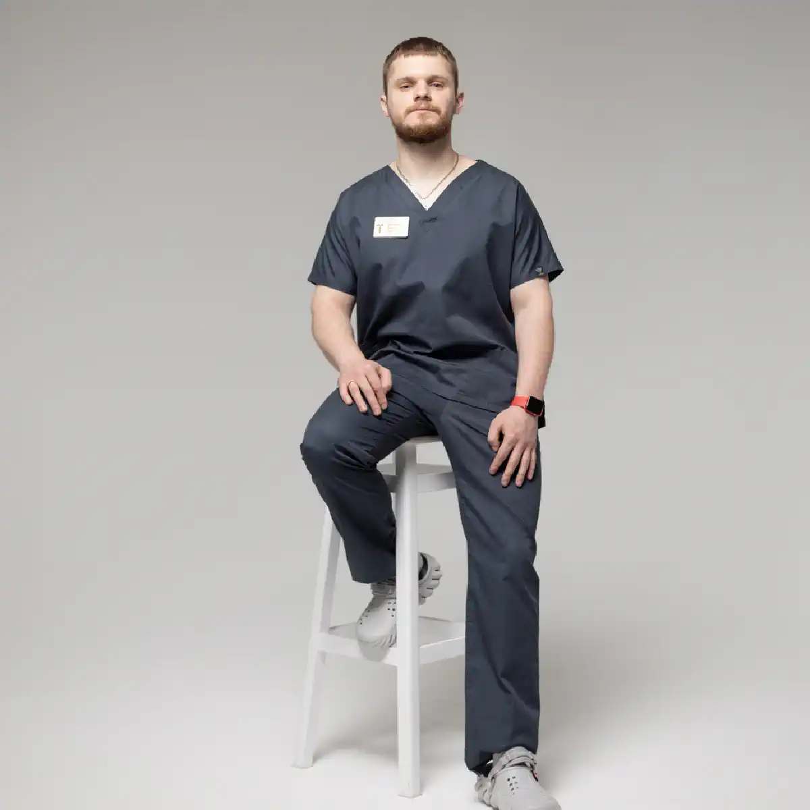

+38(068) 79 72 782
+38(068) 79 72 782Виведення із запою вдома Харків
Знімаємо алкогольну інтоксикацію швидко та безпечно без стресу та зайвих очей


Безкоштовна консультація, працюємо цілодобово 24/7
Знімаємо алкогольну інтоксикацію швидко та безпечно без стресу та зайвих очей
Виведення із запою вдома в Харкові — це комплексна медична допомога, спрямована на безпечне припинення запійного стану, зняття алкогольної інтоксикації та стабілізацію життєво важливих функцій організму без госпіталізації. Домашній формат лікування особливо актуальний при вираженій слабкості, тривозі, безсонні, стрибках артеріального тиску, прискореному серцебитті, треморі та неможливості самостійно дістатися до клініки. Своєчасне виведення із запою дозволяє не лише полегшити стан, а й запобігти тяжким, потенційно небезпечним для життя ускладненням, створивши основу для подальшого відновлення.
Запій — це стан глибокої алкогольної інтоксикації, за якого організм працює на межі своїх можливостей. Тривале вживання спиртного призводить до зневоднення, порушення електролітного балансу, токсичного ураження печінки, перевантаження серцево-судинної системи та виснаження нервової системи. У таких умовах самостійні спроби «перетерпіти» або різко припинити прийом алкоголю можуть спровокувати серйозні наслідки — від різких стрибків тиску та аритмій до судом і алкогольного делірію. Саме тому виведення із запою має проводитися під контролем лікаря-нарколога із застосуванням професійних медичних методів. Виведення із запою вдома починається з оцінки стану пацієнта та підбору індивідуальної схеми лікування. Основу терапії становить крапельниця від алкоголю, яка дозволяє швидко вивести токсини, заповнити дефіцит рідини та електролітів, підтримати роботу печінки, серця й головного мозку. Внутрішньовенне введення препаратів забезпечує швидкий і прогнозований ефект, що особливо важливо при тяжкому самопочутті та виражених симптомах абстиненції.
Вихід із запою вдома має важливу психологічну перевагу. Пацієнт перебуває у звичному середовищі, без стресу, пов’язаного з поїздкою та перебуванням у стаціонарі, що сприяє більш м’якому та спокійному виходу із запійного стану. Крім того, виведення із запою вдома проводиться анонімно, без постановки на облік і зайвого розголосу, що часто стає вирішальним чинником для звернення по допомогу. Виведення із запою — це перший, але вкрай важливий етап лікування, спрямований на стабілізацію стану та запобігання ускладненням. Після нормалізації самопочуття лікар надає рекомендації щодо подальших кроків: відновлювальної терапії, профілактики повторних запоїв і, за наявності мотивації, подальшого лікування алкогольної залежності. Такий послідовний і медично обґрунтований підхід дозволяє не просто тимчасово полегшити стан, а закласти міцну основу для повернення до стабільного та тверезого життя.
Анонімність — одна з ключових і принципово важливих умов звернення за наркологічною допомогою, особливо в ситуаціях, пов’язаних з алкогольною залежністю та запійними станами. Для багатьох людей саме страх розголосу, осуду з боку оточення або можливих наслідків для роботи й репутації стає основною причиною відмови від своєчасного лікування. Виведення із запою вдома проводиться повністю анонімно, без постановки на облік, без передачі будь-якої інформації державним структурам, роботодавцям чи третім особам і з неухильним дотриманням лікарської таємниці на всіх етапах надання допомоги.
Нарколог приїжджає на звичайному автомобілі без розпізнавальних знаків, у цивільному одязі та без медичної символіки, не привертаючи уваги сусідів, родичів чи сторонніх людей. Такий підхід повністю виключає розголос, незручні ситуації та зайві запитання з боку оточення. Це особливо важливо для пацієнтів, які побоюються соціальних, професійних або репутаційних наслідків звернення за наркологічною допомогою та хочуть зберегти звичний спосіб життя без стороннього втручання. Сувора конфіденційність створює для пацієнта відчуття психологічної безпеки та довіри, що має величезне значення для ефективності лікування. У спокійній і захищеній обстановці людина може відкрито й чесно розповісти лікарю про тривалість запою, обсяги та характер вживаного алкоголю, супутні захворювання, перенесені ускладнення, прийом лікарських препаратів і загальне самопочуття. Така відвертість дозволяє наркологу точніше оцінити стан організму, виявити можливі ризики та підібрати максимально ефективну й безпечну схему лікування.
Анонімний формат допомоги значно знижує психологічний бар’єр перед зверненням за медичною підтримкою та допомагає не відкладати лікування до критичного погіршення стану, коли ризик ускладнень і загрози для життя суттєво зростає. Пацієнт отримує можливість розпочати терапію своєчасно, без тиску, страху та почуття провини. Виведення із запою вдома з дотриманням повної конфіденційності створює комфортні та безпечні умови для стабілізації самопочуття, швидкого зняття інтоксикації та відновлення життєво важливих функцій організму. Такий формат допомоги стає важливим і усвідомленим кроком на шляху до відновлення здоров’я, профілактики тяжких наслідків запою та подальшого переходу до більш стабільного й якісного життя.
Крапельниця від запою — це основний і найбільш ефективний медичний метод детоксикації, що застосовується для швидкого, контрольованого та безпечного виведення пацієнта зі стану алкогольної інтоксикації. Внутрішньовенне введення лікарських препаратів забезпечує негайне надходження активних речовин безпосередньо в кровотік, минаючи шлунково-кишковий тракт. Це має принципове значення при нудоті, блюванні, зневодненні, порушенні всмоктування та загальній слабкості, які майже завжди супроводжують запійні стани та роблять пероральний прийом препаратів малоефективним або неможливим.
Крапельниця сприяє прискореному виведенню токсинів і продуктів розпаду етанолу, що накопичилися в організмі, відновленню водно-електролітного балансу та нормалізації обмінних процесів на клітинному рівні. Одночасно проводиться комплексна підтримка життєво важливих органів і систем — печінки, серця, головного мозку та центральної нервової системи, які зазнають максимального токсичного навантаження при тривалому вживанні алкоголю. Завдяки цьому знижується вираженість абстинентного синдрому, зменшуються такі симптоми, як тремор рук, головний біль, нудота, тахікардія, відчуття внутрішнього напруження та паніки, поступово нормалізується сон і загальний психоемоційний стан пацієнта.
Склад крапельниці підбирається суворо індивідуально лікарем-наркологом після оцінки стану пацієнта. При цьому враховуються тривалість і інтенсивність запою, ступінь інтоксикації, вік, маса тіла, наявність хронічних і супутніх захворювань, показники артеріального тиску та пульсу, а також можливі протипоказання і медикаментозне навантаження. До складу крапельниці можуть входити детоксикаційні та регідратаційні розчини, вітаміни й метаболічні препарати, засоби для захисту печінки, стабілізації серцево-судинної системи, зниження тривожності та відновлення нормального сну. Такий персоналізований підхід робить процедуру максимально безпечною, передбачуваною та результативною, суттєво знижуючи ризик ускладнень. У більшості випадків помітне поліпшення самопочуття спостерігається вже в перші години після початку терапії: зменшується слабкість, минає виражена інтоксикація, знижується потяг до алкоголю, прояснюється свідомість і з’являється фізична можливість відновлюватися. За потреби лікар може скоригувати склад крапельниці або призначити підтримувальне лікування на наступні дні.
Вартість виведення із запою вдома в Харкові починається від 2199 грн.
Процедура виведення із запою вдома починається з оперативного виїзду лікаря-нарколога, зазвичай протягом 20–60 хвилин з моменту звернення. Швидке прибуття спеціаліста особливо важливе при вираженій інтоксикації, різкому погіршенні самопочуття, стрибках артеріального тиску та тривожних симптомах абстиненції, коли зволікання може призвести до ускладнень.
Після прибуття на місце нарколог проводить повний первинний медичний огляд. Лікар вимірює артеріальний тиск, пульс, рівень сатурації кисню, оцінює загальний фізичний стан, роботу серцево-судинної системи, а також неврологічний і психоемоційний стан пацієнта. Додатково збирається детальний анамнез: уточнюється тривалість запою, обсяги вживаного алкоголю, наявність хронічних захворювань, перенесених ускладнень, прийом лікарських препаратів і можливі алергічні реакції. Такий комплексний підхід дозволяє об’єктивно оцінити ризики та підібрати оптимальну тактику лікування.
Після діагностики нарколог встановлює індивідуально підібрану крапельницю від алкоголю, склад якої формується з урахуванням стану пацієнта, ступеня інтоксикації та супутніх чинників. Крапельниця спрямована на детоксикацію, відновлення водно-електролітного балансу, підтримку печінки, серця й нервової системи, а також на зниження тривожності та нормалізацію сну. Протягом усієї процедури здійснюється безперервний медичний контроль: лікар спостерігає за реакцією організму, динамікою показників і загальним самопочуттям пацієнта, за потреби коригуючи склад і швидкість введення препаратів. Це робить процес максимально безпечним і передбачуваним.
Після завершення виведення із запою пацієнт отримує детальні рекомендації щодо подальшого режиму, харчування, відновлення сну та прийому підтримувальних препаратів. За потреби нарколог призначає додаткову терапію та роз’яснює подальші кроки, спрямовані на профілактику повторних запоїв і стабілізацію стану. Такий поетапний і професійний підхід дозволяє безпечно вивести пацієнта із запою та створити умови для подальшого відновлення.
Прокапатися від алкоголю вдома — це можливість отримати повноцінну медичну детоксикацію у звичній і комфортній обстановці, без необхідності їхати до клініки, стояти в чергах або проходити госпіталізацію. Домашній формат лікування особливо важливий для пацієнтів, які перебувають в ослабленому стані, відчувають сильну втому, тривожність, запаморочення, нудоту або виражений фізичний і психологічний дискомфорт під час пересування. У таких ситуаціях дорога до медичного закладу може лише посилити стрес і погіршити самопочуття.
Процедура проводиться під постійним контролем лікаря-нарколога, що гарантує безпеку та ефективність лікування. Спеціаліст оцінює загальний стан пацієнта, ступінь алкогольної інтоксикації та підбирає індивідуальний склад крапельниці. Внутрішньовенна терапія дозволяє швидко і м’яко зняти інтоксикацію, відновити водно-електролітний баланс, нормалізувати обмінні процеси та підтримати роботу печінки, серця й нервової системи. Важливою перевагою є те, що препарати надходять безпосередньо в кровотік, забезпечуючи швидкий і прогнозований ефект навіть при тяжкому стані. Відсутність стресових факторів, пов’язаних із поїздкою, очікуванням і зміною обстановки, сприяє більш спокійному та м’якому виходу із запійного стану. Пацієнт перебуває у знайомому середовищі, може розслабитися, що позитивно впливає на нервову систему та пришвидшує відновлення. Це особливо важливо при підвищеній тривожності, панічних відчуттях і порушеннях сну, які часто супроводжують запій.
Прокапатися від алкоголю вдома особливо підходить пацієнтам із вираженою слабкістю, підвищеною тривогою, безсонням, стрибками артеріального тиску, тремором рук, а також тим, хто цінує конфіденційність і психологічний комфорт. Уже в перші години після початку процедури більшість пацієнтів відзначають помітне покращення самопочуття: зменшується головний біль і нудота, знижується внутрішнє напруження, з’являється ясність свідомості та відчуття фізичного полегшення. Виведення із запою вдома дозволяє не лише стабілізувати поточний стан, а й своєчасно запобігти розвитку небезпечних ускладнень, пов’язаних з алкогольної інтоксикацією. Крім того, прокапування вдома створює сприятливі умови для подальшого відновлення організму, виконання рекомендацій лікаря та стає першим усвідомленим кроком на шляху до стабільного, тверезого і більш якісного життя.
Самостійний вихід із запою є вкрай небезпечним і непередбачуваним, особливо при тривалому та інтенсивному вживанні алкоголю. Різке припинення прийому спиртного без медичної підтримки може спровокувати тяжкі ускладнення, такі як судоми, різкі стрибки артеріального тиску, порушення серцевого ритму, гострі панічні стани та розвиток алкогольного делірію («білої гарячки»). Подібні наслідки становлять пряму загрозу здоров’ю і життю людини та нерідко потребують екстреної госпіталізації.
У стані запою організм перебуває в режимі хронічної інтоксикації та сформованої фізичної залежності. Алкоголь стає частиною біохімічних процесів, і його різке виключення призводить до тяжкого збою в роботі нервової системи, серця, судин і внутрішніх органів. Саме тому спроби «перетерпіти», різко припинити пити або лікуватися народними методами часто закінчуються погіршенням стану, посиленням симптомів абстиненції та розвитком небезпечних ускладнень. Особливу небезпеку становить відсутність медичного контролю. Без участі лікаря неможливо об’єктивно оцінити ступінь інтоксикації, ризики для серцево-судинної системи, наявність прихованих ускладнень з боку печінки, нирок і головного мозку. В домашніх умовах без професійної допомоги неможливо своєчасно відстежити критичні зміни тиску, пульсу або дихання та запобігти загрозливим для життя станам.
Правильний і безпечний шлях — виклик нарколога додому, професійна оцінка стану пацієнта та проведення медикаментозної детоксикації. Лікар проводить огляд, вимірює артеріальний тиск, пульс, сатурацію, оцінює неврологічний і психоемоційний стан, після чого підбирає індивідуальну схему лікування. Основою терапії стає крапельниця від алкоголю, спрямована на виведення токсинів, відновлення водно-електролітного балансу та підтримку життєво важливих органів. Такий медичний підхід дозволяє м’яко й контрольовано вивести пацієнта із запійного стану, знизити вираженість абстинентного синдрому, запобігти розвитку ускладнень і стабілізувати самопочуття вже в перші години лікування. Крім того, своєчасна допомога створює сприятливі умови для подальшого відновлення організму, профілактики повторних запоїв і прийняття виваженого рішення щодо подальшого лікування алкогольної залежності.
Медикаментозне виведення із запою є комплексним медичним підходом, спрямованим на безпечне, поетапне та контрольоване припинення запійного стану, а також на відновлення порушених функцій організму. На відміну від самостійних спроб відмови від алкоголю, такий метод дозволяє мінімізувати ризики та уникнути різких збоїв у роботі життєво важливих систем. Основу терапії становить крапельниця від алкоголю, яка забезпечує швидке виведення токсинів і продуктів розпаду етанолу, поповнення дефіциту рідини та електролітів, а також нормалізацію обмінних і енергетичних процесів на клітинному рівні.
У межах медикаментозного виведення із запою застосовуються препарати для стабілізації серцево-судинної системи, зниження навантаження на серце та вирівнювання артеріального тиску й пульсу. Це особливо важливо для пацієнтів із гіпертонією, тахікардією та хронічними захворюваннями серця, у яких запій значно підвищує ризик ускладнень. Обов’язковим елементом терапії є підтримка печінки, оскільки саме цей орган зазнає максимальної токсичної нагрузки при тривалому вживанні алкоголю. Препарати, спрямовані на захист і відновлення функції печінки, допомагають прискорити детоксикацію та знизити наслідки інтоксикації.
Додатково до схеми лікування включаються засоби для зниження тривожності, внутрішнього напруження та панічних проявів, які часто супроводжують абстинентний синдром. Це дозволяє стабілізувати психоемоційний стан пацієнта та запобігти розвитку тяжких нервових реакцій. Також призначаються препарати, що сприяють нормалізації сну, усуненню безсоння та відновленню роботи центральної нервової системи, що відіграє ключову роль у процесі відновлення після запою. Усі лікарські засоби підбираються суворо індивідуально лікарем-наркологом з урахуванням ступеня алкогольної інтоксикації, тривалості й інтенсивності запою, віку пацієнта, наявності хронічних і супутніх захворювань, а також можливих протипоказань. Такий персоналізований підхід дозволяє швидко та безпечно купірувати абстинентний синдром, суттєво полегшити загальне самопочуття та знизити ризик розвитку тяжких ускладнень, включно із судомами, аритміями та алкогольним делірієм.
Медикаментозне виведення із запою не обмежується лише зняттям гострих симптомів. Воно створює надійну медичну основу для подальшого відновлення організму, допомагає пацієнту вийти з критичного стану та дає можливість перейти до наступних етапів лікування — відновлювальної терапії, профілактики повторних запоїв і, за наявності мотивації, комплексного лікування алкогольної залежності.
Народні методи виведення із запою — такі як трав’яні відвари, контрастний душ, «похмільні» рецепти та інші домашні способи — не мають доведеної медичної ефективності й не здатні забезпечити повноцінну детоксикацію організму. Ці методи не впливають на виведення токсинів на клітинному рівні, не відновлюють порушений водно-електролітний баланс і не захищають життєво важливі органи від наслідків алкогольної інтоксикації. Ба більше, при вираженій інтоксикації, зневодненні та порушенні роботи внутрішніх органів подібні спроби самолікування можуть бути потенційно небезпечними та призвести до погіршення стану.
При запої організм перебуває у стані тяжкого токсичного перевантаження, а серцево-судинна й нервова системи працюють на межі своїх можливостей. Контрастний душ у такій ситуації може спровокувати різкі стрибки артеріального тиску, порушення серцевого ритму, запаморочення і навіть втрату свідомості. Трав’яні відвари, особливо при тривалому застосуванні, нерідко посилюють навантаження на печінку та нирки, які й без того страждають від токсичного впливу алкоголю. Крім того, можливі алергічні реакції та непередбачувані побічні ефекти. Особливу небезпеку становлять так звані «похмільні» рецепти, що передбачають повторний прийом алкоголю. Такий підхід лише тимчасово притуплює симптоми, не усуваючи причину інтоксикації, і фактично подовжує запій. У результаті посилюється фізична залежність, зростає токсичне навантаження на організм і значно підвищується ризик тяжких ускладнень — від гіпертонічних кризів до алкогольного делірію.
Народні методи не замінюють медичну допомогу й не дозволяють контролювати стан пацієнта. В домашніх умовах без професійного нагляду неможливо своєчасно оцінити небезпечні зміни тиску, пульсу або неврологічного статусу. У низці випадків самолікування призводить до посилення абстинентного синдрому, наростання тривоги й панічних станів, розвитку судом і алкогольного психозу. Єдиним безпечним і ефективним способом виходу із запою є медичне виведення під контролем лікаря-нарколога. Професійна допомога включає індивідуально підібрану крапельницю від алкоголю, медикаментозну підтримку серця, печінки та нервової системи, а також постійний контроль життєвих показників. Такий підхід дозволяє не лише зняти гострі симптоми, а й запобігти небезпечним ускладненням, стабілізувати стан пацієнта та створити умови для подальшого відновлення і профілактики повторних запоїв.
Термінове виведення із запою необхідне при різкому погіршенні загального самопочуття, коли стан пацієнта швидко прогресує і з’являється реальна загроза для здоров’я та життя. До тривожних ознак належать високий або нестабільний артеріальний тиск, виражений тремор рук і всього тіла, сильна загальна слабкість, прискорене серцебиття, наростаюча тривога й панічні стани. Небезпечним симптомом також є стійке безсоння, за якого людина не може заснути протягом кількох діб, що призводить до виснаження нервової системи та підвищує ризик психічних порушень.
Особливу небезпеку становить ситуація, коли пацієнт не може приймати їжу та воду, страждає від постійної нудоти й блювання. Такий стан швидко призводить до зневоднення, згущення крові та порушення водно-електролітного балансу. На цьому тлі значно зростає ризик судом, серцевих аритмій, різких стрибків тиску, алкогольного делірію та інших тяжких ускладнень, які можуть розвиватися стрімко й непередбачувано. За таких умов будь-які спроби самолікування, прийому народних засобів або очікування «поки стане легше» часто закінчуються критичним погіршенням стану й необхідністю екстреної госпіталізації.
Окремої уваги потребують ситуації, коли на тлі запою з’являються сплутаність свідомості, дезорієнтація, галюцинації, виражений страх або агресія. Ці симптоми можуть свідчити про початок алкогольного психозу та потребують негайного медичного втручання. Без допомоги лікаря ризик тяжких наслідків для нервової системи та внутрішніх органів зростає в рази. У таких ситуаціях зволікання неприпустиме. Потрібен негайний виклик нарколога, який зможе оперативно оцінити стан пацієнта, виміряти тиск, пульс, рівень сатурації, визначити ступінь інтоксикації та наявність загроз. Лікар проводить стабілізацію життєво важливих показників і виконує медикаментозне виведення із запою за допомогою індивідуально підібраної крапельниці та підтримувальної терапії. Своєчасна професійна допомога дозволяє запобігти небезпечним і необоротним наслідкам, швидко полегшити стан пацієнта, знизити ризик ускладнень і безпечно вивести людину із запійного стану. Екстрене виведення із запою — це не просто полегшення симптомів, а життєво важливий захід, який може зберегти здоров’я і життя пацієнта.
Екстрена медична допомога потрібна негайно при появі небезпечних симптомів, що вказують на тяжку алкогольну інтоксикацію та високий ризик життєзагрозливих ускладнень. До таких станів належать судоми, які свідчать про серйозні порушення роботи центральної нервової системи та нерідко передують розвитку алкогольного делірію; галюцинації, сплутаність свідомості, дезорієнтація, що вказують на алкогольний психоз і потребують термінового втручання лікаря. Подібні прояви можуть прогресувати стрімко й без медичної допомоги призводити до тяжких наслідків.
Особливу загрозу становлять блювання з домішками крові або жовчі, що може свідчити про шлунково-кишкову кровотечу, ерозивний гастрит, гострий панкреатит або токсичне ураження печінки. Інтенсивні болі в грудях або животі можуть бути ознакою ураження серця, підшлункової залози або печінки й потребують негайної діагностики, оскільки зволікання підвищує ризик необоротних ускладнень. Артеріальний тиск вище 160/100 мм рт. ст., особливо на тлі запою, значно підвищує ймовірність гіпертонічного кризу, інсульту або інфаркту міокарда.
До критичних симптомів також належать порушення дихання, виражена задишка, відчуття нестачі повітря, прискорене або поверхневе дихання, а також тривалий запій понад 2–3 дні, який пацієнт не може припинити самостійно і за якого стан продовжує погіршуватися. У таких випадках організм перебуває у стані глибокої інтоксикації, зневоднення та виснаження, порушується водно-електролітний баланс, страждають серце і головний мозок, а ризик тяжких і необоротних наслідків зростає з кожною годиною. Окремої уваги потребують ситуації, коли на тлі запою з’являються різка слабкість, втрата свідомості, неконтрольоване блювання, сильний тремор, виражена тривога або агресія. Ці ознаки можуть вказувати на швидке прогресування інтоксикації та потребують термінового медичного втручання.
За наявності будь-якого з перелічених симптомів самолікування категорично неприпустиме. Спроби впоратися зі станом самостійно або за допомогою народних методів не лише неефективні, а й можуть призвести до різкого погіршення і прямої загрози для життя. Єдиним правильним рішенням є негайний виклик нарколога, який оперативно оцінить стан пацієнта, проконтролює життєво важливі показники (тиск, пульс, сатурацію), проведе медикаментозну стабілізацію та надасть професійну медичну допомогу, спрямовану на запобігання небезпечним ускладненням і збереження здоров’я та життя пацієнта.
Зняття алкогольної інтоксикації вдома — це комплексна медична допомога, що включає детоксикацію організму, регідратацію та медикаментозну підтримку під постійним контролем лікаря-нарколога. Такий підхід дозволяє безпечно й ефективно усунути наслідки тривалого вживання алкоголю без необхідності госпіталізації, у звичній і психологічно комфортній обстановці.
В основі процедури лежить виведення токсинів і продуктів розпаду етанолу, які накопичуються в крові та тканинах при запої. Одночасно проводиться поповнення дефіциту рідини та електролітів, що вкрай важливо при зневодненні, порушеннях серцевого ритму, слабкості й запамороченні. Медикаментозна підтримка підбирається індивідуально та спрямована на відновлення функцій печінки, серця, нервової системи й головного мозку, які зазнають максимального навантаження при алкогольній інтоксикації.
Зняття інтоксикації вдома дозволяє швидко покращити самопочуття вже в перші години після початку терапії. Зменшуються головний біль і нудота, знижується тривожність і внутрішнє напруження, нормалізуються артеріальний тиск і пульс, поступово відновлюється сон. Важливим ефектом процедури є зниження потягу до алкоголю, що допомагає пацієнту легше пережити гострий період і уникнути повторного вживання.
Домашній формат лікування особливо цінний для пацієнтів із вираженою слабкістю, нестабільним станом і підвищеною тривожністю, а також для тих, хто хоче зберегти конфіденційність. Професійно проведене зняття алкогольної інтоксикації не лише полегшує поточний стан, а й створює фізіологічну основу для подальшого відновлення, профілактики ускладнень і наступних етапів лікування алкогольної залежності.
Усупереч поширеним міфам, крапельниця — це не «чарівна паличка» і не спосіб миттєво вирішити проблему алкогольної залежності, а науково обґрунтований і клінічно виправданий метод медичної детоксикації. Її дія спрямована не на тимчасове пригнічення симптомів або створення ілюзії полегшення, а на усунення наслідків алкогольної інтоксикації та відновлення порушених фізіологічних процесів в організмі, які страждають при тривалому вживанні алкоголю.
Ефективність крапельниці підтверджується швидким зниженням рівня інтоксикації, помітним покращенням самопочуття та стабілізацією життєво важливих показників — артеріального тиску, пульсу, дихання, рівня насичення киснем і загального фізичного стану. Завдяки внутрішньовенному введенню препарати надходять безпосередньо в кровотік, минаючи шлунково-кишковий тракт, що особливо важливо при нудоті, блюванні та порушенні всмоктування. Такий спосіб введення дозволяє оперативно впливати на причину погіршення стану, пришвидшити виведення токсинів і значно знизити навантаження на внутрішні органи. За правильного та індивідуального підбору складу крапельниця суттєво зменшує ризик небезпечних ускладнень, таких як судоми, порушення серцевого ритму, різкі стрибки артеріального тиску та розвиток алкогольного делірію. Лікар-нарколог враховує ступінь інтоксикації, тривалість і характер запою, вік пацієнта, наявність хронічних і супутніх захворювань, а також можливі протипоказання і лікарське навантаження. Завдяки цьому процедура стає максимально безпечною, прогнозованою та адаптованою до конкретного стану пацієнта.
Крапельниця від запою вдома — це медичний інструмент екстреної та підтримувальної допомоги, який допомагає пережити гострий період, стабілізувати стан і відновити базові функції організму. Вона знижує вираженість абстинентного синдрому, зменшує потяг до алкоголю та дає пацієнту фізичну можливість прийти до тями. Проте крапельниця не усуває психологічні причини залежності й не замінює комплексного лікування.
Саме тому крапельниця розглядається як важливий, але проміжний етап на шляху до відновлення. Вона створює сприятливі умови для подальшої роботи — відновлювальної терапії, психотерапевтичної підтримки, профілактики повторних запоїв і прийняття усвідомленого рішення щодо подальшого лікування алкогольної залежності. Такий послідовний і медично грамотний підхід дозволяє не лише безпечно вийти із запійного стану, а й значно знизити ризики для здоров’я у довгостроковій перспективі.
Виклик нарколога додому забезпечує лікування без розголосу, з індивідуальним підходом і постійним медичним контролем на всіх етапах надання допомоги. Такий формат дозволяє отримати кваліфіковану наркологічну підтримку безпосередньо за місцем перебування пацієнта, без необхідності відвідування клініки та зайвого стресу, пов’язаного з дорогою й очікуванням.
Лікар-нарколог прибуває за вказаною адресою у найкоротші строки та надає допомогу в умовах повної конфіденційності. Використовується звичайний транспорт без розпізнавальних знаків, а вся інформація про стан пацієнта, діагноз і проведені процедури суворо захищена лікарською таємницею й не передається третім особам. Це особливо важливо для людей, які цінують приватність і хочуть уникнути соціального або професійного розголосу. Індивідуальний підхід передбачає ретельну оцінку стану пацієнта, ступеня інтоксикації, тривалості запою, наявності хронічних захворювань і можливих ризиків. На підставі огляду лікар підбирає персоналізовану схему лікування, включно зі складом крапельниці та підтримувальною терапією, що підвищує ефективність і безпеку допомоги.
Постійний медичний контроль дозволяє своєчасно відстежувати реакцію організму, контролювати життєво важливі показники та за потреби коригувати лікування. Виклик нарколога додому є оптимальним рішенням для пацієнтів, які цінують конфіденційність, комфорт і безпеку, а також для тих, хто потребує оперативної та професійної наркологічної допомоги без відвідування стаціонару.
В UmbrellaPlus виведення із запою вдома проводиться суворо за медичними стандартами, з пріоритетом безпеки, ефективності та повної конфіденційності. Такий підхід дозволяє надавати професійну наркологічну допомогу пацієнтам у тяжкому стані без необхідності госпіталізації, у звичній і психологічно комфортній обстановці. Особлива увага приділяється точній оцінці ризиків та індивідуальному підбору терапії, що є особливо важливим при тривалих запоях і вираженій інтоксикації. Допомога починається з швидкого виїзду лікаря-нарколога, що має критичне значення при різкому погіршенні самопочуття, нестабільному артеріальному тиску, сильній слабкості, тривозі та ризику ускладнень. Оперативне прибуття спеціаліста дозволяє своєчасно провести діагностику, оцінити ступінь інтоксикації та запобігти небезпечним наслідкам запою, таким як судоми, аритмії або алкогольний делірій.
У кожному клінічному випадку підбирається індивідуальна крапельниця від алкоголю, склад якої формується з урахуванням тривалості запою, ступеня інтоксикації, віку пацієнта, наявності хронічних і супутніх захворювань. Персоналізована терапія спрямована на ефективне виведення токсинів і продуктів розпаду алкоголю, відновлення водно-електролітного балансу, а також підтримку життєво важливих органів — печінки, серця, судин і нервової системи, які зазнають максимального навантаження при алкогольній інтоксикації. Процедура проводиться під постійним медичним контролем. Лікар відстежує ключові показники — артеріальний тиск, пульс, дихання, загальне самопочуття — і за потреби оперативно коригує терапію. Такий контроль значно знижує ризик ускладнень і робить процес виведення із запою максимально безпечним і прогнозованим.
Окрема увага в UmbrellaPlus приділяється анонімності та дотриманню лікарської таємниці. Допомога надається без постановки на облік і без передачі інформації третім особам, що дозволяє пацієнтам звертатися по лікування без страху розголосу та соціальних наслідків. Після стабілізації стану лікар надає детальні рекомендації щодо подальшого лікування, відновлення сну, режиму дня, харчування та профілактики повторних запоїв. Комплексний підхід спрямований не лише на швидке полегшення симптомів і зняття інтоксикації, а й на створення міцної основи для стійкого відновлення. Своєчасна медична допомога, індивідуальна терапія та подальші рекомендації допомагають знизити ризик зривів, покращити загальний стан здоров’я та зробити важливий крок до більш стабільного й тверезого життя.
Телефон для консультації та виклику нарколога додому: +38(050-021-69-57)
Так, ми суворо дотримуємося повної конфіденційності на всіх етапах лікування. Інформація про пацієнта, діагноз та проходження терапії не передається третім особам. Звернення до нас не тягне за собою постановку на облік. Ви можете бути впевнені у безпеці та анонімності.
Програма лікування розробляється індивідуально після консультації з фахівцем. Враховуються вид залежності, її тривалість, фізичний та психологічний стан пацієнта. Такий підхід дозволяє підвищити ефективність терапії та знизити ризик зриву. Ми не використовуємо шаблонні рішення.
Так, ми супроводжуємо пацієнтів і після основного курсу лікування. Проводяться консультації, рекомендації щодо адаптації та профілактики рецидивів. За потреби можлива подальша психологічна підтримка. Це допомагає зберегти результат та повернутися до повноцінного життя.
Анонимно

Никакими усилиями самостоятельно я не смогла преодолеть запой, и наступала ломка, сопровождаемая повышенным давлением и пульсом. Тогда я решила обратиться за помощью в клинику. Врачи оказали мне неоценимую поддержку! Уже прошел месяц, и я не только не употребляю алкоголь, но даже не испытываю к нему желания!
Анонимно
Могу с уверенностью порекомендовать данный центр для тех, кто ищет помощь при выводе из запоя. Я неоднократно обращался к ним и могу сказать, что цена соответствует качеству услуг. После проведения капельницы в клинике, вся тяга к алкоголю проходит, и я чувствую себя гораздо лучше. Это действительно эффективный метод, и я благодарен клинике за их профессионализм и заботу!
Анонимно
Неоднократно я пытался бросить алкоголь самостоятельно, но каждый раз уговаривал себя продолжать. Я сначала ограничивался одной бутылкой в день, потом двумя, и в итоге вновь попадал в запой. Но в итоге, я смог прекратить употребление алкоголя только после того, как обратился в центр Амбрелла и заказал у них услугу вывода из запоя. Уже не пью 3 месяца и удалось полностью восстановиться. Благодарю врача который меня вел - Алексея Валерьевича.
Анонимно
Здравствуйте! Я хотел бы выразить свою искреннюю благодарность клинике за быстрое и профессиональное освобождение моего мужа пивного рабства! Ранее у меня уже не было никаких надежд на его выздоровление. Однако, благодаря вашим перспективным методам лечения, мы теперь идем к полному отказу от алкоголя. Вы дали нам новую надежду и оказали неоценимую помощь! Спасибо вам за все!
Анонимно
Я долгое время страдал от запоев и не мог справиться с этой проблемой. Однако, когда я обратился в этот центр, они быстро помогли мне вернуться на ноги, и самое главное - предоставили мне возможность не возвращаться к запоям. Уже почти полгода я не испытываю запоев! Это для меня настоящее чудо, я никогда не думал, что смогу так преодолеть свои проблемы. Большое спасибо центру Амбрелла!
Анонимно
Благодарю ваш центр Амбрелла за оперативное и высококачественное лечение! Женский алкоголизм - это настоящее горе, с которым невозможно справиться в одиночку. Я уже потеряла надежду, но благодаря вашей помощи, она вернулась ко мне! Отдельная благодарность врачу Станиславу Вячеславовичу, а также благодарность Богу за то, что он послал мне такое чудо как ваша центр! Спасибо вам всем!
Анонимно
Хочу выразить благодарность врачу Владиславу Алексеевичу за то, что вы избавили меня от этого ужаса. Я уже был в отчаянии, перепробовал множество клиник и центров, но только здесь я наконец получил настоящую помощь! Алкоголь полностью разрушил меня, и если бы не ваша помощь, я, возможно, уже не был бы жив. С вами я смог вернуть себе жизнь и буду благодарен вам всегда!
Номер телефону:
+380 (68) 797 27 82
+380 (50) 021 69 57
Адресу наркологічного центра вашого міста уточнюйте за
телефоном
Працюємо: Київ, Одеса, Львів, Харків, Дніпро, Запоріжжя,
Черкасах, Чугуєві, Чорноморську, Кам'янському
Telegram: t.me/umbrellaplus
Графік работы: Цілодобово